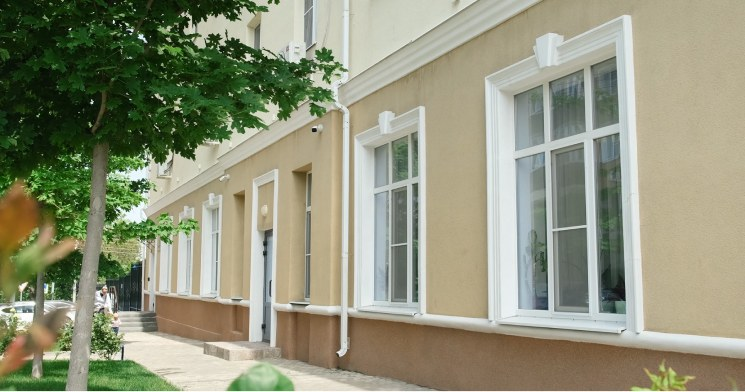

Поступление
Сначала — познакомиться
Вы выбираете школу для ребёнка. Мы начинаем с экскурсии, разговора и внимания к вашей ситуации.

Как поступить
Четыре шага
Так порядок поступления описан на сайте гимназии и в правилах приёма от 26.08.2024. Формат для вашего класса уточнит приёмная.
Экскурсия и знакомство
Приезжайте посмотреть классы и задать вопросы. Расскажите о ребёнке и о том, что важно вашей семье.
Пробный день и тестирование
Пробный день — по желанию родителей. По правилам приёма: русский язык, математика, английский и беседа с психологом.
Обратная связь
Обсуждаем результаты тестирования, готовность ребёнка и то, как пройдёт адаптация.
Зачисление
При положительном результате и наличии мест — договор и документы. Список выдаёт приёмная.
Запись на экскурсию
Выберите удобное время
Покажем классы и ответим на вопросы. Можно прийти вместе с ребёнком.
Удобнее по телефону? Приёмная: +7 909 420-40-00
Ближайшие две недели
Демо-расписаниеСвободное время
Это демонстрация: заявка никуда не отправлена. В рабочей версии она сразу попадёт в приёмную, а вы получите подтверждение. Сейчас подтвердите визит по телефону +7 909 420-40-00.
Перевод из другой школы
Перейти можно в течение года
Правила приёма допускают перевод в течение учебного года при наличии свободных мест. Есть ли место в нужном классе сейчас, уточните в приёмной.
Частые вопросы
Перед первой встречей
Сколько детей будет в классе?
На сайте гимназии указана наполняемость классов и групп до 12–16 человек. Сколько детей сейчас в вашем классе, скажет приёмная.
Можно ли перевестись в середине года?
Да, при наличии свободных мест. Возможность поступления в нужный класс и формат знакомства уточняются в приёмной.
Сколько стоит обучение?
Стоимость зависит от ступени. До договора приёмная даст письменный расчёт: сумма, период оплаты и что в неё входит. Страница стоимости
Можно ли прийти вместе с ребёнком?
Да. Ребёнку полезно заранее увидеть школу и её ритм. Договоритесь о составе встречи при записи.
Что взять на первую встречу?
Достаточно знать возраст ребёнка, текущий класс и ваши вопросы. Перечень документов для зачисления выдаст приёмная.